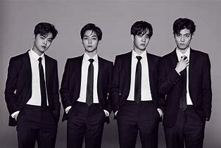
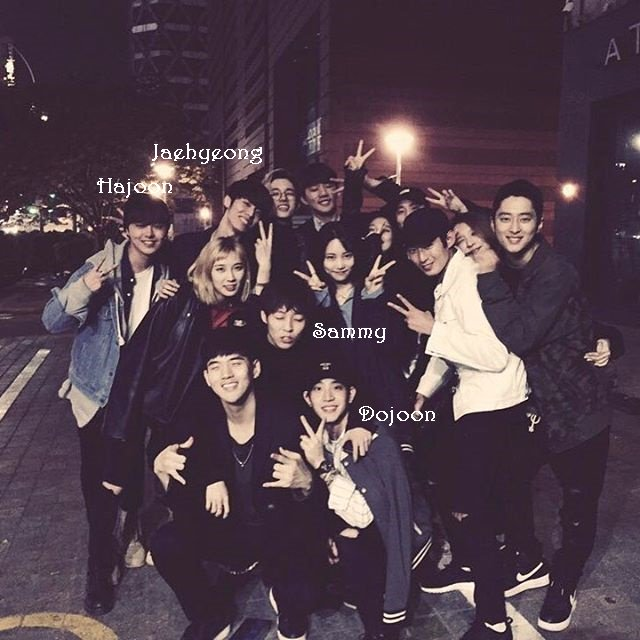
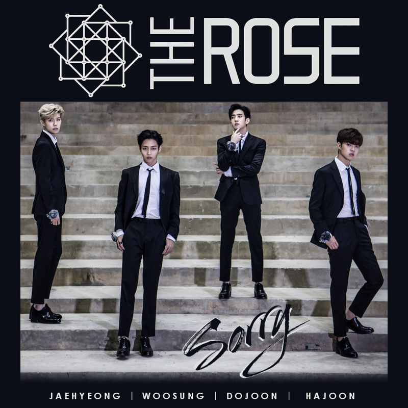
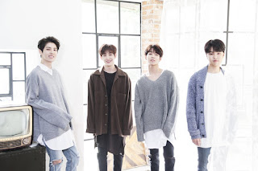

THE ROSE
| ¿Por qué 'The Rose'?: Existen muchos colores distintos de rosas y ellos quieren mostrarnos que son una banda con muchos colores de música
La banda se caracteriza por su sonido melódico acompañado de instrumentos acústicos como la guitarra, violín, violonchelo, saxofón,entre otros, e instrumentos más electrónicos como la guitarra eléctrica, el bajo, la batería, el pad y el teclado. Sus letras bastante emotivas con temas sociales que van desde la pérdida, la aceptación, la esperanza y en especial la sanación, sumando su interpretación en vivo han captado la atención del público internacional |
 |
Carrera Musical
Pre-Debut |
|
|  |
La historia de The Rose se inició en 2015. En ese entonces, Dojoon (voz, guitarra y teclado) y Jaehyeong (bajo) se ganaban la vida como músicos callejeros, y aunque se conocieron no tenían tiempo de interactuar mucho debido a que Dojoon era practicante en la agencia DSP Media. Pasado un tiempo, Jaehyeong comenzó a ensayar con Hajoon (batería), y al ver que había química invitó a Dojoon a unirse, por lo que renunció a su trabajo en la agencia para dedicarse de lleno al grupo. |
2017: Debut con su Primer Single "Sorry" |
|
| El 3 de Agosto del 2017, The Rose debuta con su primer single "Sorry" junto el MV. "Sorry" es una canción que ellos mismos han producido y compuesto además de crear su propia letra para completar todo el trabajo de la creación del single. "Sorry", es una canción de amor triste basada en la música pop británica. Expresa un hombre que lamenta profundamente a su amante egoísta y reza por la otra persona para poder volver a su lado. Obtuvo el octavo lugar en la lista de música pop coreana de iTunes, y se clasificó entre los 10 primeros en la lista de música pop coreana de ocho países, incluidos Canadá, Gran Bretaña, Alemania y Francia |
 |
Regreso con un Segundo Single "Like We Used To" |
|
|  |
|
2018: Regreso con su Primer Mini Album "Void" |
|
| El 9 de Abril de 2018, se reveló que The Rose estaría de vuelta el 16 de Abril con su primer mini álbum "Void", el cual contendrá sus dos canciones lanzadas anteriormente, 3 canciones nuevas y los instrumentales de las canciones "Sorry" "I.L.Y" y "Baby". |  |
Curiosidades:
|
Un fandom: se le llama asi a la comunidad de fanaticos de un grupo musical.Quienes tienen la mision de posicionar a los artistas en plataformas musicales para volverse tendencia o romper records con sus lanzamientos musicales.De la misma manera apoyar a los artistas en sus proyectos y colaboraciones. |